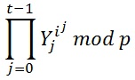
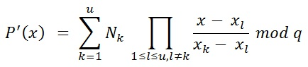

Der Verifiable Secret Sharing Algorithmus nach dem Feldman-Schema
Der Verifiable Secret Sharing Algorithmus wurde 1987 von Paul Feldman entwickelt und
basiert auf dem von Adi Shamir 1979 entwickelten Secret Sharing Verfahren Shamir's Secret Sharing. Mit diesem Algorithmus ist es möglich,
ein Geheimnis auf mehrere Personen aufzuteilen, wobei eine gewisse Untermenge dieser Personen erforderlich ist,
um das Geheimnis zu rekonstruieren.
Seien n und t natürliche Zahlen. In einem (n,t)-Secret Sharing Protokoll wird das
Geheimnis auf n Personen aufgeteilt. Jede Person hat einen Share des Geheimnisses.
Wenn sich t dieser Personen zusammentun, können sie das Geheimnis rekonstruieren.
Wenn sich aber weniger als t dieser Teilgeheimnisträger zusammentun, können sie
keine relevanten Informationen über das Geheimnis erhalten. Dieses Prinzip kann man
mit einer Schatzkarte vergleichen, die auf mehrere Personen verteilt wird. Nur wenn
alle Teile der Schatzkarte zusammengelegt werden, dann man den Schatz
finden. Bedenkt man jetzt jedoch, dass jeder Teilgeheimnisträger seinen Teil der
Schatzkarte verändern und dadurch die Bedeutung der gesamten Karte ändern könnte,
ist es notwendig, das zu verhindern. Der Verifiable Secret Sharing-Algorithmus erweitert
den Shamir's Secret Sharing Algorithmus um diese Funktionaliät.
Der Algorithmus von Shamir basiert auf der Lagrange-Polynominterpolation und ist
ein (n,t)-Secret-Sharing-Protokoll. Alle Berechnungen werden im Ganzzahlkörper
ℤ/p* durchgeführt.
Domain-Parameter (Variablen)
- n: Anzahl der Player
n muss eine natürliche Zahl sein, 2 ≤ n
- t: Anzahl der Player zur Rekonstruktion
2 ≤ t ≤ n
- s: Geheimnis
s muss eine natürliche Zahl sein.
- p: Modul für die Überprüfung der Shares, ist eine Safe Prime
p > 2s
- q: Größter Primfaktor von (p-1)
- g: Ist ein Element des Körpers ℤ/p mit der multiplikativen Ordnung q
Der Dealer legt alle Parameter fest. Bis auf n und t sind alle Parameter geheim und nur dem Dealer bekannt.
Ablauf des Algorithmus
Polynomerstellung und Verteilung der Shares und Commitments
Der Dealer will ein Geheimnis s ∈ ℕ verteilen.
-
Er wählt geheime Elemente aj ∈ ℕ, 1 ≤ j ≤ (t-1), 1 ≤ a ≤ q und konstruiert daraus das Polynom:

Das Polynom ist vom Grad t-1. Der Koeffizient a0 ist das Geheimnis s
-
Der Dealer berechnet die Shares Ni = P(i) mod q, 1 ≤ i ≤ n
i = ID des Shareholders
Gleichzeitig mit den Shares werden auch die Commitments Ye , 0 ≤ e ≤ (t-1) für alle Koeffizienten ae berechnet und an alle Shareholder verteilt.

Die Commitments werden später zur Überprüfung der Shares benötigt.
-
Der Dealer gibt dem i-ten Shareholder den Share Ni , 1 ≤ i ≤ n.
Überprüfung der Shares
Vor der Rekonstruktion erfolgt noch die Überprüfung der Shares durch die Player.
Jeder Player kann seinen eigen Share überprüfen, sowie die Shares der anderen Player
die zur Rekonstruktion verwendet werden.
Der Check besteht aus 2 Schritten.
Schritt 1:

Schritt 2:

Stimmen die Ergebnisse dieser Berechnungen überein, ist der Share als korrekt verifiziert.
Diese Berechnung muss für jeden zu überprüfenden Share seperat durchgeführt werden.
Rekonstruktion
Um das Geheimnis rekonstruieren zu können, nehmen wir an, dass t Shareholder zusammen arbeiten.

Diese Formel wird von den Shareholdern benutzt, um das Geheimnis zu rekonstruieren.
Das Geheimnis ist der Koeffizient a0 des rekonstruierten Polynoms.